文本
试题
题尾
卷尾
其他
页面布局

级别 | 复习模块 | 题型 | 考查内容 |
1级 | 运动的描述 | 选择题/计算题 | 运动学物理量 |
2级 | 测速原理 | 选择题/计算题 | 测速度、加速度 |
3级 | 匀变速直线运动 | 选择题/计算题 | 运动学公式、图像、二级推论 |
4级 | 自由落体和竖直上抛 | 选择题/计算题 | 自由落体、竖直上抛公式与图像 |


用高速摄影机拍摄的四张照片如图所示，下列说法正确的是（ ）
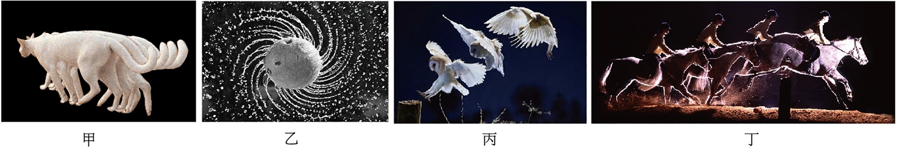
研究甲图中猫在地板上行走的速度时，猫可视为质点
研究乙图中水珠形状形成的原因时，旋转球可视为质点
研究丙图中飞翔鸟儿能否停在树桩上时，鸟儿可视为质点
研究丁图中马术运动员和马能否跨越障碍物时，马可视为质点
运动会中有100m、200m、400m比赛。如图所示，在200m、400m比赛中运动员从不同的起跑线出发，全程分道赛跑，比赛的最后程都经过跑道的直道部分，到达同一条终点线。下列选项正确的是（ ）
蜻蜓在水中“点水”激起的波纹，俗称“蜻蜓点水”，一只蜻蜓在平静的水面上匀速飞行时，两次点水后在水面上激起的波纹，俯视看其形状如图所示，由图可分析出（ ）
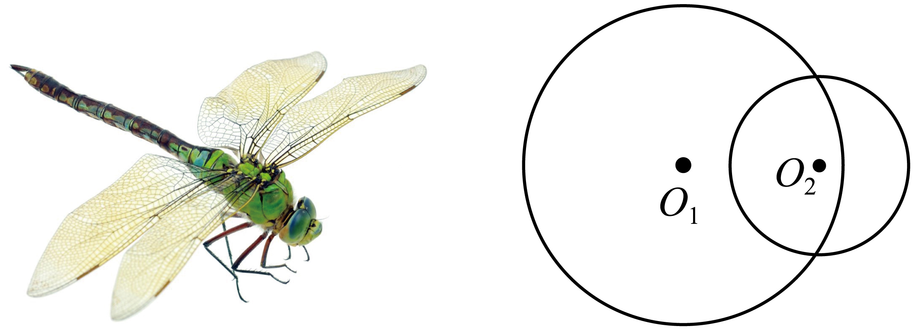
如图所示的曲线
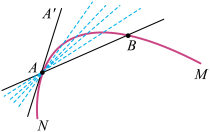
类比是一种常用的重要的研究方法。
自然界中某个物理量D的变化可以记为
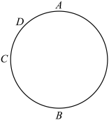
(1)请类比加速度的定义，写出急动度的定义式和单位。
(2)在匀变速直线运动中，我们学习了如何处理一维的矢量问题，在相互作用中，我们学习了如何处理二维的矢量问题，请类比之前的方法，计算下列三种情景下物体急动度的大小和方向。已知物体在做逆时针的匀速圆周运动，线速度的大小为
情景1：物体从A开始第一次运动到B的过程中的急动度
情景2：物体从A开始第一次运动到C的过程中的急动度
情景3：物体从A开始第一次运动到D的过程中的急动度
(3)在第二问中我们计算的其实是平均急动度，当变化的时间趋于零时，平均急动度即为瞬时急动度。请类比匀速圆周运动中向心加速度的推导方法，推导第二问中做匀速圆周运动的物体瞬时急动度的大小和方向。
现在的物理学中加速度的定义式为
若
若
若
若
电梯、汽车等交通工具在加速时会使乘客产生不适感，其中不适感的程度可用“急动度”来描述．急动度是描述加速度变化快慢的物理量，即 汽车工程师用急动度作为评判乘客不舒适程度的指标，按照这一指标，具有零急动度的乘客，感觉较舒适．如图所示为某汽车加速过程的急动度
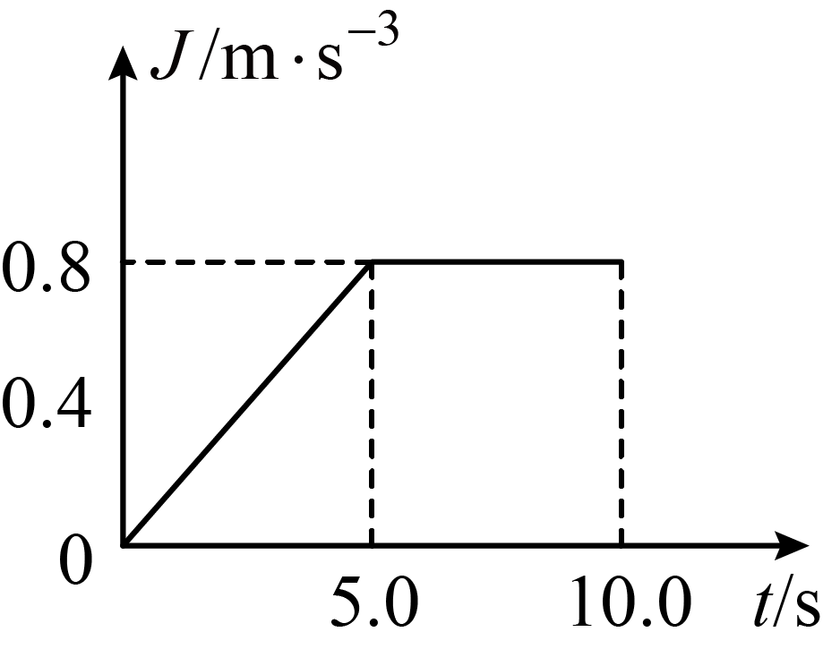
在
在
在
在
测速在生活中很常见，不同的情境中往往采用不同的测速方法．
情境1：如图，滑块上安装了宽度
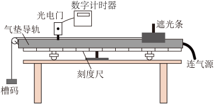
情境2：某高速公路自动测速装置如图甲所示，雷达向汽车驶来的方向发脉冲电磁波，相邻两次发射时间间隔为t．当雷达向汽车发射电磁波时，在显示屏上呈现出一个尖形波；在接收到反射回来的无线电波时，在显示屏上呈现出第二个尖形波．根据两个波在显示屏上的距离，可以计算出汽车至雷达的距离．显示屏如图乙所示（图乙中标的数据
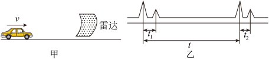
a．当第一个脉冲电磁波遇到汽车时，汽车距雷达的距离为 ．
b．从第一个脉冲遇到汽车的瞬间到第二个脉冲遇到汽车的瞬间，所经历的时间为 ．
c．若考虑到
情境3：用霍尔效应制作的霍尔测速仪可以通过测量汽车车轮的转速n（每秒钟转的圈数），进而测量汽车的行驶速度．
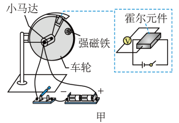
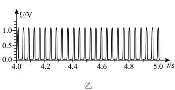
某同学设计了一个霍尔测速装置，其原理如图甲所示．在车轮上固定一个强磁铁，用直流电动带动车轮匀速转动，当强磁铁经过霍尔元件（固定在车架上）时，霍尔元件输出一个电压脉冲信号．当半径为
图甲所示是一种速度传感器的工作原理图，在这个系统中
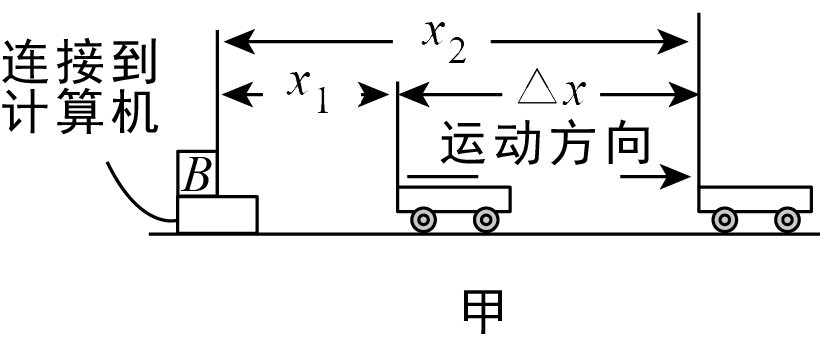
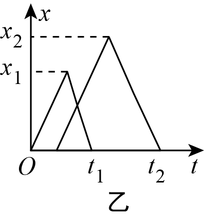
超声波的速度为
如图甲所示，是一种超声波测速仪器的工作原理图，这个系统中只有一个不动的小盒子
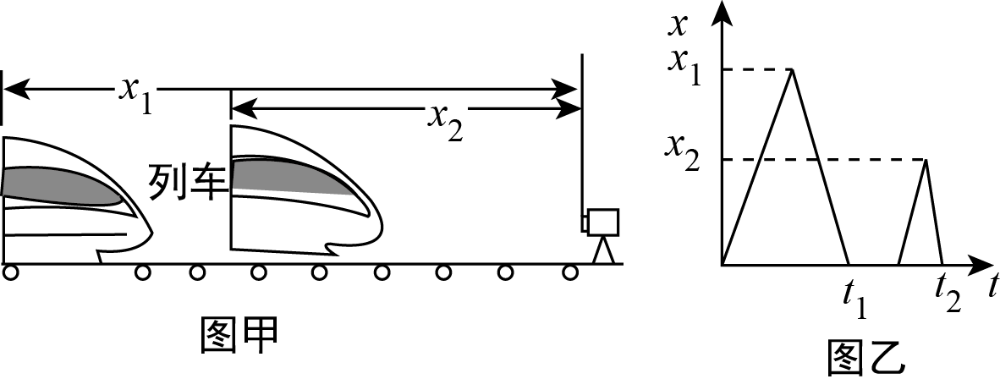
超声波的速度为
超声波的速度为
物体的平均速度为
物体的平均速度为
如图所示，用气垫导轨测量滑块的速度和加速度，滑块上安装了宽度为 d 的遮光条．滑块做匀变速运动先后通过两个光电门，配套的数字计时器记录了遮光条通过光电门 1的时间
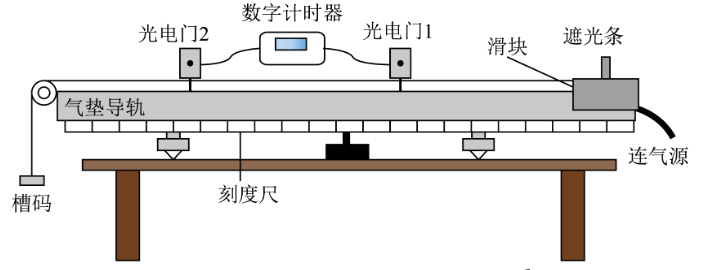
在高中阶段，我们学习了多种测量物体加速度的方法．
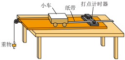
通过打点计时器，可以测量小车的加速度．实验装置如图所示．通过实验得到了一条点迹清晰的纸带，找一个合适的点当作计时起点O（
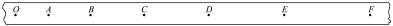
通过光电门，同样可以测量物体的加速度．如图，滑块上安装了宽度为
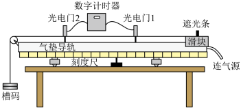
频闪照片也是一种测量加速度的方法．在暗室中，照相机的快门处于常开状态，频闪仪每隔一定时间发出一次短暂的强烈闪光，照亮运动的物体，于是胶片上记录了物体在几个闪光时刻的位置．某时刻，将一小球从O点由静止释放，频闪仪每隔
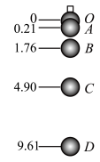
调节水龙头，让水一滴一滴地流出，在水龙头的正下方放一个盘子，调整盘子的高度，使一水滴刚碰到盘子时，恰好有另一水滴从水龙头开始下落，而空中还有
质点做直线运动的位移x与时间t的关系为
加速度是1m/s2
初速度是2.5m/s
第1s内的位移是5m
第1s末的速度是7m/s
商场自动感应门如图所示，人走进时两扇门从静止开始同时向左右平移，经
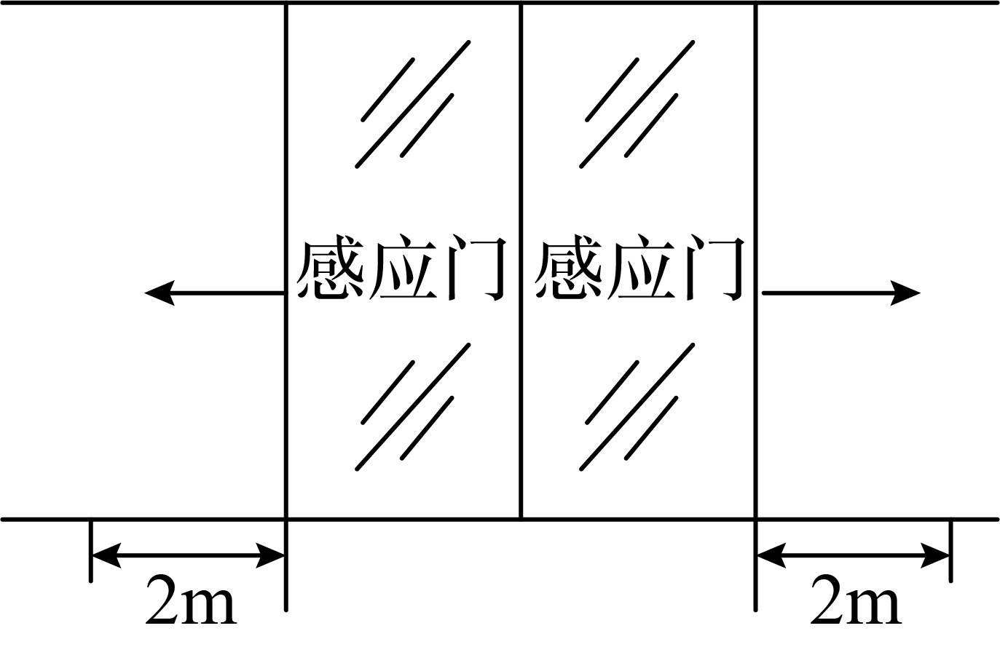
以30m/s速度行驶的汽车遇到紧急情况时突然刹车，刹车时汽车的加速度大小为5m/s²。下列说法正确的是（ ）
在交警处理某次交通事故时，通过监控仪器扫描，输入计算机后得到该汽车在水平路面上刹车过程中的位移随时间变化的规律为
汽车由甲地开出，沿平直公路开到乙地时，刚好停止运动．它的速度-时间图像如图所示，在
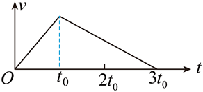
加速度大小之比为
位移大小之比为
平均速度大小之比为
平均速度大小之比为
如图所示，
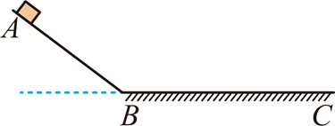
物体运动过程中的最大速度为
一质点做匀加速直线运动，第3s内的位移是2m，第4s内的位移是2.5m，那么以下说法中正确的是（ ）
这2s内平均速度是2.25m/s
第3s末瞬时速度是2.25m/s
质点的加速度是0.125m/s2
初速度为0
如图所示，小球从竖直砖墙某位置静止释放，用频闪照相机在同一底片上多次曝光，得到了图中1、2、3、4、5…所示小球运动过程中每次曝光的位置，连续两次曝光的时间间隔均为
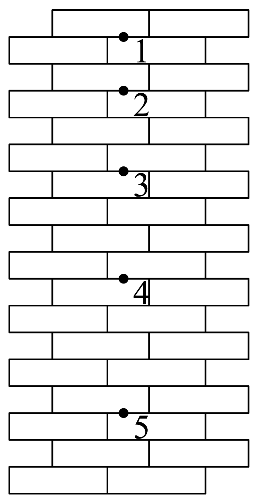
位置“1”就是小球释放的初始位置
小球做匀加速直线运动
小球下落的加速度为
小球在位置“4”的速度为
一辆做匀减速直线运动的汽车，依次经过a、b、c三点。已知汽车在
某同学利用打点计时器研究做匀加速直线运动小车的运动情况，如图所示为该同学实验时打出的一条纸带中的部分计数点
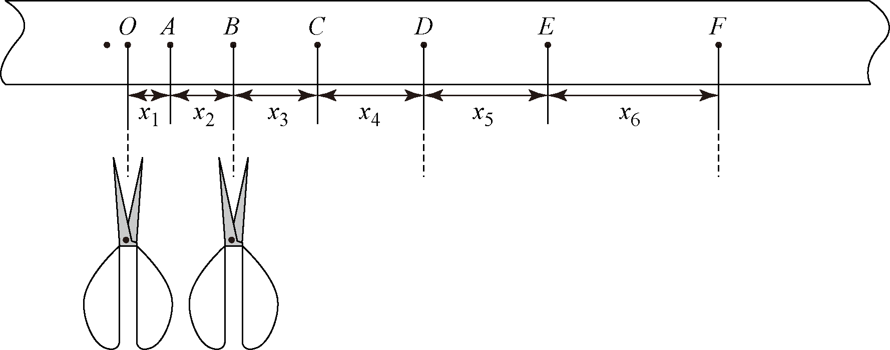
为研究小车的运动，此同学用剪刀沿虚线方向把纸带上
在图中
某小型航空母舰的甲板长为100m，战斗机的起飞速度为50m/s，飞机在甲板上的运动可以看做匀变速直线运动，最大加速度为10m/s2．
如果战斗机想该航母上从静止开始加速且能正常起飞，需要在航母的尾部加装一弹射器，求：弹射器至少给飞机一个多大的初速度才能保证飞机正常起飞．
弹射器因故发生故障，飞机要想正常起飞，需要航母以速度
如图所示，
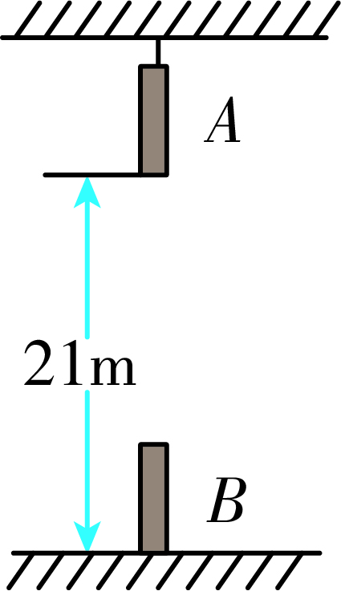
如图所示，质量为m的子弹水平射入并排放置的3块固定的、相同的木板，穿过第3块木板时子弹的速度恰好变为0．已知子弹在木板中运动的总时间为t，子弹在各块木板中运动的加速度大小均为a．子弹可视为质点，不计子弹重力．下列说法
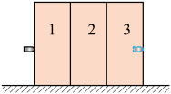
一辆汽车行驶在平直公路上，从
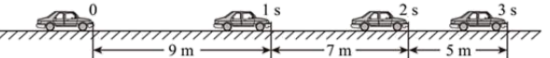
一个物体做自由落体运动，重力加速度
第
第
在前
在第
在地铁某路段的隧洞墙壁上，连续相邻地挂有相同的广告画，画幅的宽度为0.9m，在列车行进的某段时间内，由于视觉暂留现象，车厢内的人向窗外望去会感觉广告画面是静止的。若要使人望向窗外时，看到的是画中的苹果做自由落体运动，则这段时间内（人眼的视觉暂留时间取0.05s，重力加速度g取10m/s2）（ ）
伽利略在《关于两门新科学的对话》中写道：“我们将木板的一头抬高，使之略呈倾斜，再让铜球由静止滚下……为了测量时间，我们把一只盛水的大容器置于高处，在容器底部焊上一根口径很细的管子，用小杯子收集每次下降时由细管流出的水，然后用极精密的天平称水的重量”，若将小球由静止滚下的距离记为L，对应时间内收集的水的质量记为m，则L与m的比例关系为
如图甲，
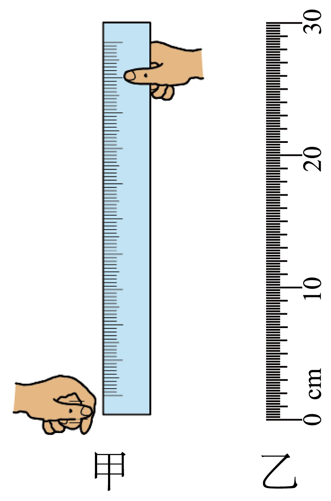
该尺子刻度下面（靠近乙图中的
该尺子刻度下面（靠近乙图中的
如果时间刻度是在北京按照正确方法标度的，则在广州测量的结果比真实值大
如果时间刻度是在北京按照正确方法标度的，则在广州测量的结果比真实值小
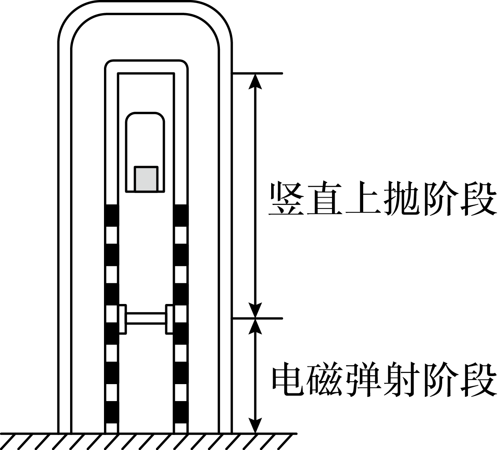
电磁弹射阶段用时约为
电磁弹射阶段，实验舱上升的距离约为
实验舱竖直上抛阶段的运行长度约为
实验舱开始竖直上抛的速度约为
某同学在地面上，把一物体以一定的初速度竖直向上抛出，物体达到最高点后落回抛出点。如果取竖直向上为正方向，不计空气阻力。下列描述该运动过程的
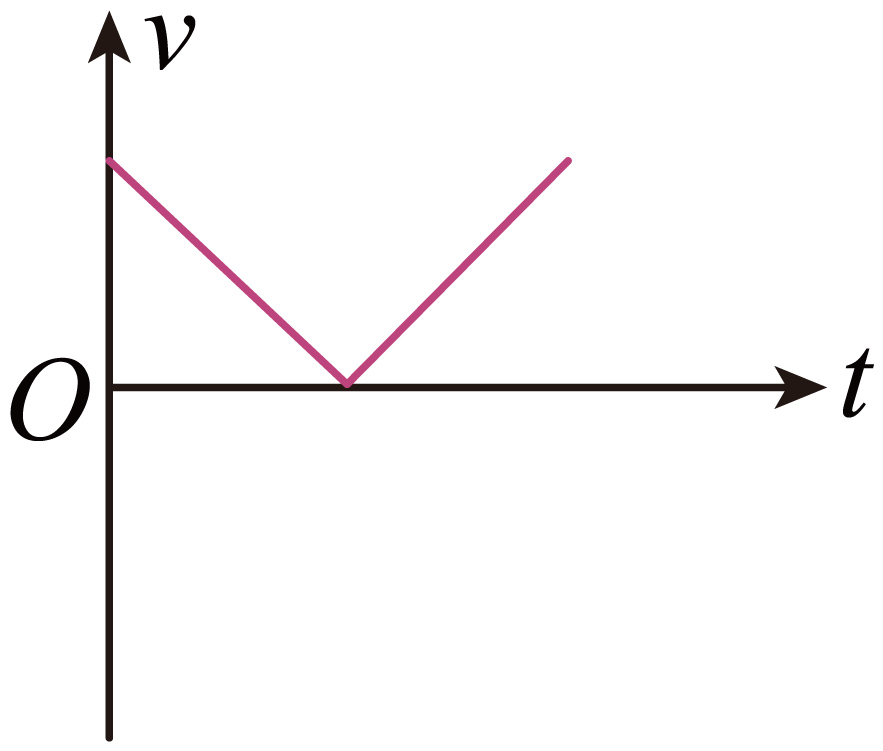
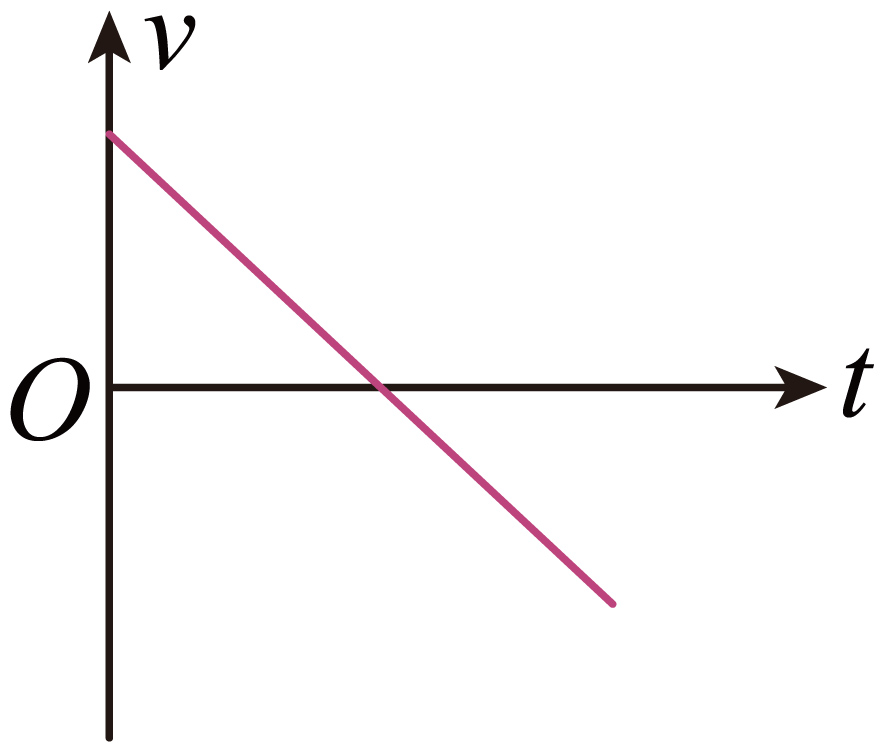
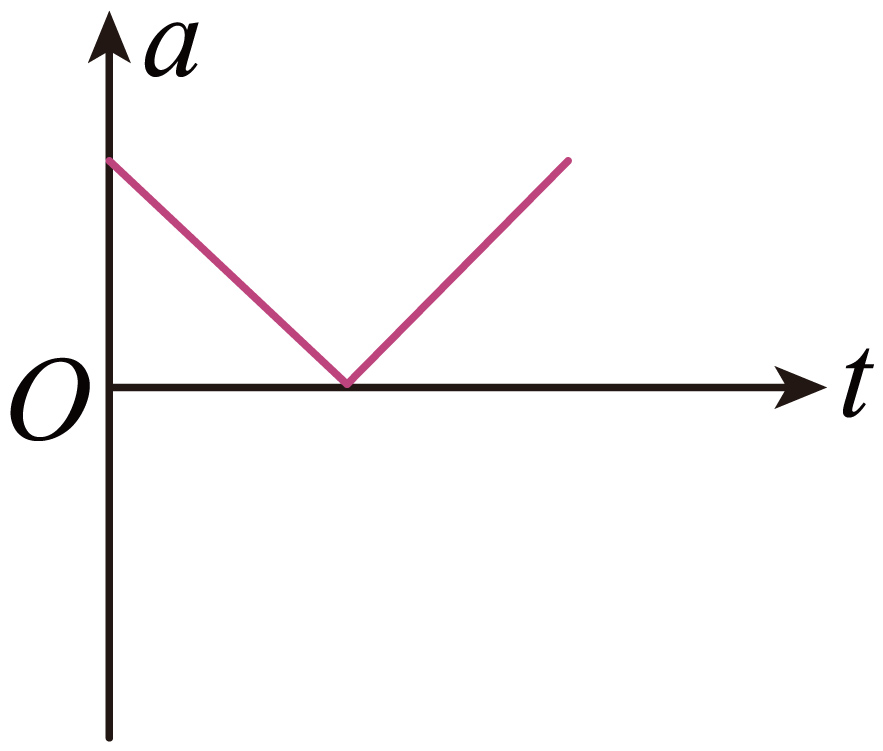
篮球比赛前，常通过观察篮球从一定高度由静止下落后的反弹情况判断篮球的弹性．某同学拍摄了该过程，并得出了篮球运动的
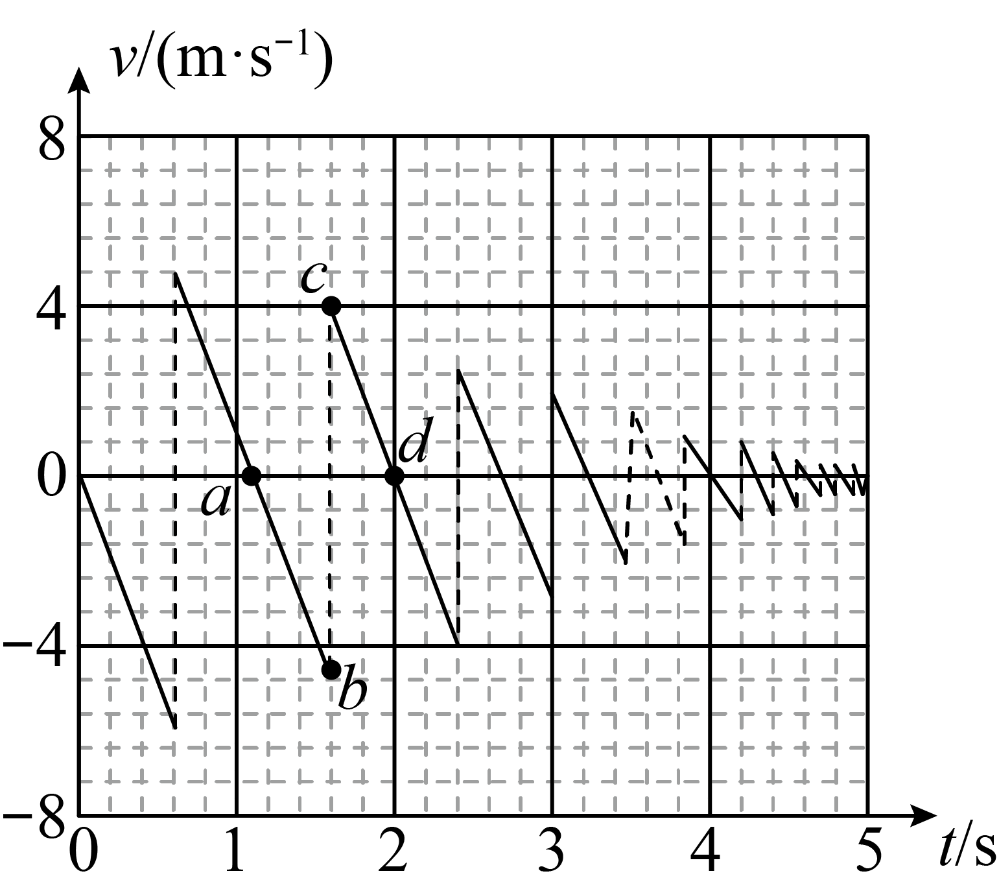
某校一课外活动小组自制一枚火箭，设火箭发射后始终在垂直于地面的方向上运动．火箭点火后可认为做匀加速直线运动，经过4s到达离地面40m高处时燃料恰好用完，若不计空气阻力，取g=10m/s2，求：
燃料恰好用完时火箭的速度大小v；
火箭上升离地面的最大高度H；
火箭从发射到返回发射点的时间。
一辆小汽车在10s内速度从0达到100km/h，一列火车在300s内速度也从0达到100km/h。若认为加速过程中汽车和火车都在做匀加速直线运动，则加速过程中（ ）
位移传感器是把物体运动的位移、时间转换成电信号，经过计算机的处理，可以立刻在屏幕上显示物体运动位移随时间变化的仪器．通过数据处理，可以进一步得出速度随时间变化的关系．如图所示是利用位移传感器测量位移的示意图．
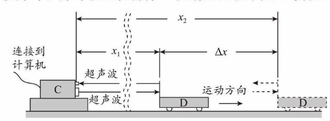
该系统中有一个不动的小盒
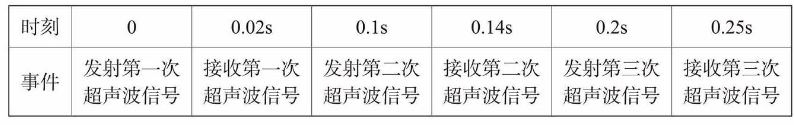
已知超声波在空气中的传播速度为
汽车到测速仪的距离越来越近
汽车第一次反射超声波信号时，与测速仪的距离为
汽车在第一次和第二次反射超声波信号之间的时间内的平均速度约为
汽车正在减速行驶
物体从静止开始做匀加速直线运动，第
现在的物理学中加速度的定义式为
若
若
若
若
小球从竖直砖墙某位置由静止释放，用频闪照相机在同一底片上多次曝光，得到了如图中1、2、3、4、5所示的小球在运动过程中每次曝光的位置。连续两次曝光的时间间隔均为T，每块砖的厚度均为d。根据图中的信息，下列判断正确的是（ ）
汽车从制动到停止共用时5s,而且每1s 前进的距离分别为9 m、7 m、5 m、3 m和1 m．在这段时间内，汽车前1s和前2s的平均速度分别为v1和v2．下列说法正确的是
v1更接近汽车开始制动时的瞬时速度v0，且v1小于v0
v1更接近汽车开始制动时的瞬时速度v0，且v1大于v0
v2更接近汽车开始制动时的瞬时速度v0，且v2小于v0
v2更接近汽车开始制动时的瞬时速度v0，且v2大于v0
学习是一个不断探究、积累和总结的过程。科学的研究也是如此，在第一章的学习过程我们也总结出一些科学研究方法，下面关于这些研究方法表达的是（ ）
质点是一种理想化模型，它忽略了物体的形状和大小，在研究任何物理问题时都可以把物体看成质点
图像可以描述质点的运动，
可以用位移传感器测量速度，如图所示，位移传感器工作时由装置C发出短暂超声波脉冲，脉冲被运动物体反射后又被装置C接收，通过发射与接收的时间差和超声波的速度可以计算出被测物体运动的平均速度．若被测物体正远离装置C，已知第一次发射和接收超声波脉冲的时间间隔为
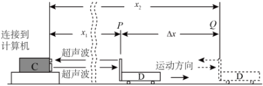
第一次发射的超声波到达被测物体时，被测物体到位置C的距离为
第二次发射的超声波到达被测物体时，被测物体到位置C的距离为
被测物体的平均速度为
被测物体的平均速度为
如图甲所示是一种速度传感器的工作原理图，在这个系统中B为一个能发射超声波的固定小盒子，工作时小盒子B向匀速直线运动的被测物体发出短暂的超声波脉冲，超声波速度为
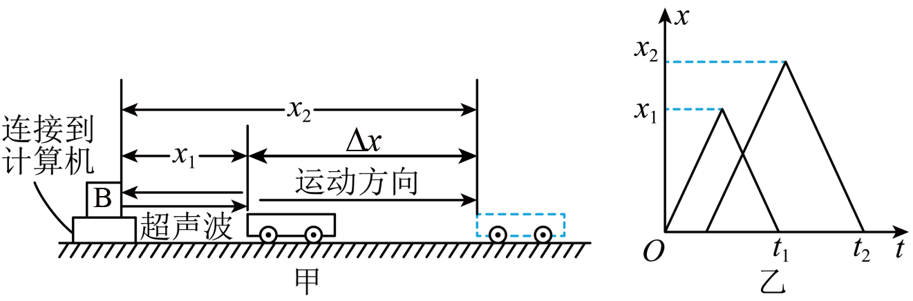
在交通事故分析中，刹车线的长度是很重要的依据，刹车线是汽车刹车后，停止转动的轮胎在地面上滑动时留下的痕迹，在某次交通事故中，汽车的刹车线长度是14m，假设汽车刹车时的加速度大小为
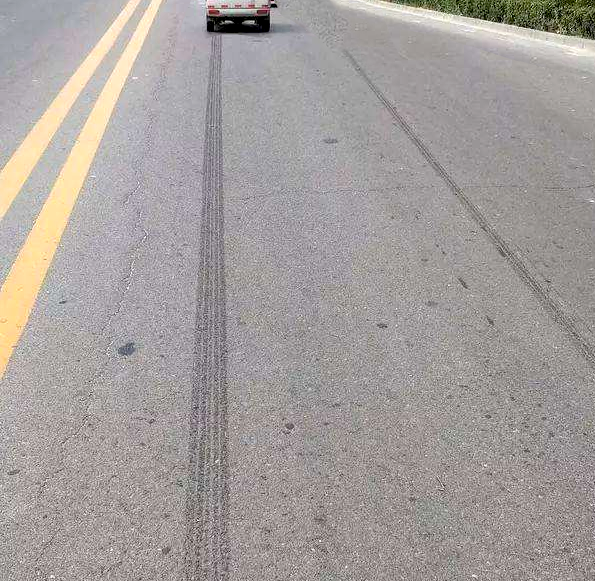
如图所示，三块木块并排固定在水平面上，一子弹（可视为质点）以速度v从左向右水平射入，若子弹在木块中做匀减速运动，穿过三块木块时速度刚好减小为零，且穿过每块木块所用的时间相等，则三木块的厚度之比d1：d2：d3为（ ）
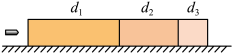
跳水运动员保持直立状态，双脚朝下由静止开始下落．开始时双脚距离水面
运动员在空中运动的时间约为
运动员在空中运动的时间约为
运动员入水时速度大小约为
运动员入水时速度大小约为
利用落体运动规律可估测人的反应时间。如图，甲同学捏住直尺顶端，使直尺保持竖直状态，乙同学用一只手在直尺0刻线位置做捏住直尺的准备，但手不碰到直尺。当乙看到甲放开直尺后立即捏住直尺。若乙捏住位置的刻度为h，下列说法正确的是（ ）
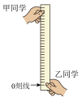
下载设置
![]()